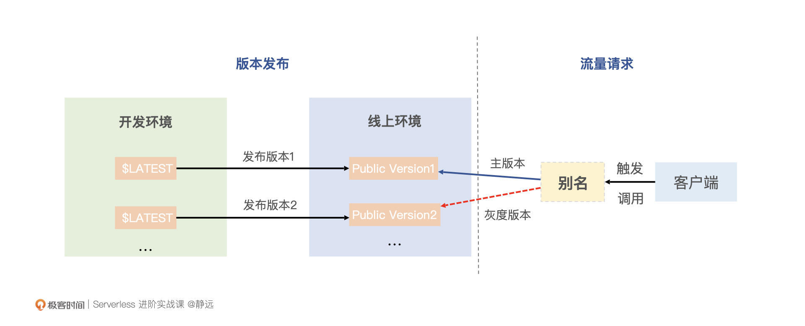

- 00 开篇词 Serverless是降本增效浪潮下的必然选择.md.html
- 00 思维构建 如何在新赛道下进阶Serverless能力？.md.html
- 01 生命周期：函数计算的基本流程是如何执行的？.md.html
- 02 触发器：如何构建事件源与函数计算的纽带？.md.html
- 03 高级属性：应对生产级别的应用，你需要掌握哪些技能？.md.html
- 04 冷启动：如何加快函数的第一次调用过程？.md.html
- 05 扩缩容：如何应对流量的波峰波谷？.md.html
- 06 流量转发：函数在不同情形下是如何执行的？.md.html
- 07 运行时（上）：不同语言形态下的函数在容器中是如何执行的？.md.html
- 08 运行时（下）：不同语言形态下的函数在容器中是如何执行的？.md.html
- 09 小试牛刀（一）：如何利用函数之间的调用解决业务问题？.md.html
- 10 小试牛刀（二）：如何突破VPC网络的速度限制？.md.html
- 11 WebIDE：如何让函数远离繁琐的本地开发模式？.md.html
- 12 编排：如何协调多任务的运行？.md.html
- 13 可观测（上）： 如何构建多维度视角下的Serverless监测体系？.md.html
- 14 可观测（下）： 如何构建多维度视角下的Serverless监测体系？.md.html
- 15 选型：不同阶段的数据应如何存储？.md.html
- 16 动手体验（一）：如何实现业务高效率地开发上线？.md.html
- 17 动手体验（二）：如何在云函数场景下实现一个有状态的服务？.md.html
- 18 实战指南：Serverless沙场老兵的一线使用经验.md.html
- 19 实战进阶（一）：Serverless “连接器” 的能力到底有多大？.md.html
- 20 实战进阶（二）：如何基于智能音箱开发一个BOT技能？.md.html
- 21 实战进阶（三）：传统的服务如何迁移到Serverless平台？.md.html
- 22 私有云：赛马时代的Serverless核心引擎谁能胜出？.md.html
- 23 实战进阶（四）：如何从0到1进阶一个开源引擎？.md.html
- 24 实战进阶（五）：如何从Serverless引擎蜕变成一个Serverless平台？.md.html
- 结束语 在实战中把握事物本质，不断革新.md.html
- 捐赠
03 高级属性：应对生产级别的应用，你需要掌握哪些技能？
你好，我是静远。
通过前面的学习，我们已经掌握了函数计算的基本特性和操作流程，可以通过配置触发器的形式来完成一些较为简单的Serverless业务场景的开发和运维了。
但是，针对复杂的场景或者是要上生产环境的应用服务，这样的操作肯定是不够的。就拿我们比较熟悉的微服务来说，一个服务模块从开发到上线运行，需要注意公共代码的复用、开发框架的灵活性、上线时候的灰度发布、线上运维的容灾，针对上下游还需要考虑到如何应对流量的波峰波谷等因素。
那么，在Serverless的函数计算中就不要注意这些了么？Serverless虽然是无服务器化的，但如果要用好函数计算平台，或者是自己要开发一个FaaS化的Serverless平台，都应该对这些因素有一个比较清晰的认识，才能更好地驾驭Serverless。
今天这节课，我们就按照一个应用“开发-发布-运维”的顺序，以我们熟知的微服务流程为参照，看看函数计算中，你需要了解哪些高阶的技能。我们先从应用的开发阶段说起。
如何提取公共的服务能力？
开发微服务的时候，如果是一个复杂一点的功能，则需要多人协作或者复用一些别人开发好的类库。那么，函数计算中是否也有类似的特性呢？
层的提出就是为了解决这个问题。你可以将函数依赖的公共库提炼到层，以减少部署、更新时的代码包体积。
目前，大部分的云厂商都支持各种语言的层，如Java、Python、Node.js、PHP等。对于支持层功能的运行时，函数计算会将特定的目录（如/opt）添加到运行时语言的依赖包搜索路径中。你可以自定义层或者使用云厂商开发好的公共层，这些公共层包含了一些常用的依赖包。
对于自定义的层，你通常需要将所有内容打包到一个ZIP文件包中，并上传到函数计算平台。函数计算运行时会将层的内容解压并部署在特定的目录，如/opt目录下。
使用了层的功能之后，有这样3个好处：
- 函数程序包更小，只关注核心代码，使开发变得更加轻松方便；
- 使用层也可以避免在制作函数zip包和依赖项过程中出现未知的错误；
- 由于可以在多个函数中引入使用，可以减少不必要的存储资源浪费。
当然，不同云厂商构建层的方式也不同，我们以百度智能云为例，一起尝试构建一个Node.js语言运行时的层。
首先，我们新建一个目录，如 mkdir my_nodejs_layer，并在该目录下新建名为“nodejs”的目录，目录结果如下所示：
➜ my_nodejs_layer tree
.
└── nodejs
1 directory, 0 files
下面，假设我们的函数代码中，需要用到JavaScript实用工具库Lodash，我们将Lodash打包到自定义的层中。进入nodejs目录，执行 npm install lodash ，我们再来查看一下目录结构：
➜ my_nodejs_layer tree -d
.
└── nodejs
└── node_modules
└── lodash
└── fp
4 directories
最后，在my_nodejs_layer目录中将nodejs打包：
zip -r nodejs_layer_lodash.zip nodejs
这样，我们自定义层的依赖就打好了。我们来看一下层上传之后的运作逻辑：
我们上传层之后，函数计算会将层的ZIP包上传到对象存储。当调用函数执行时，会从对象存储中下载层的ZIP包并解压到/opt目录。你只需要在代码中访问/opt目录，即可读取层的依赖和公共代码。
当我们上传多个层的时候，一定要注意次序问题，后序的层会覆盖相同目录下的文件。
到这里，我们已经构建并上传了自己的层，之后，就可以在编写函数的时候，通过约定的路径使用了。是不是非常方便？它其实有点类似我们微服务的依赖包，通常来说，也会通过上传自定义的类库到仓库中，让后续开发的同学更加方便地使用。
如何快速地开发和交付？
层确实可以解决我们公共代码逻辑和工具库的使用问题。不过，你可能还很好奇，“在微服务的开发中，可以比较灵活地使用某种自己擅长的语言和框架来开发代码，只要遵循服务之间的接口协议规范，就可以开发出一个模块，来提供服务能力。那么，Serverless的函数计算是否也有类似的能力，让我可以快速灵活地搞定一个服务并且执行呢？”
答案是肯定的。为了让更多开发者能够快速灵活地开发自己的服务，除了你熟知的基于函数平台提供的标准运行时来开发函数体之外，函数计算平台通常还会支持用户以自定义镜像的方式上传应用来运行。
我们以阿里云自定义镜像为例来说明其工作原理。函数计算系统初始化执行环境实例前，会扮演该函数的服务角色，获得临时用户名和密码并拉取镜像。拉取成功后，会根据指定的启动命令、参数以及端口，启动你定义的HTTP Server。然后这个HTTP Server就会接管函数计算系统所有请求的调用。
在开发函数具体的逻辑之前，我们一般还需要确认开发的是事件函数还是HTTP函数，通常来说，平台服务后端对这两种调用方式实现的逻辑不一样。
下面我们来具体看一下自定义镜像的构建和使用过程，包括五个步骤。
第一，在创建函数之前，我们需要基于自身业务来实现一个HTTP Server，并且将其打包成镜像，上传到镜像仓库，供函数计算使用。
各个云厂商的实现方式不同，主要体现在请求和响应接口上的协议适配以及服务运行方式上。针对HTTP Server的实现，这里需要强调4个点：
- 建议基于HTTP和事件的触发方式，实现相应的接口功能；
- 需要根据接口协议规范，实现请求Header和Body中值的解析和处理；
- 上传镜像时，需要指定容器的启动命令Command、参数Args及监听端口Port；
- 推荐实现一个Healthz函数，用于健康监测。
第二，我们来创建一个函数，此时，就只需要设置函数运行相关的一些基本属性，如运行超时时间、内存大小、并发度等，再关联第一步中构建的镜像即可。
第三，根据我们自身的业务场景，选择合适的触发方式来请求函数计算平台，比如，我们可以通过创建和设置一个HTTP触发器来链接事件源。
第四，通过ＨTTP触发器进行请求。由于自定义镜像是HTTP Server的形式存在，我们通常会设定监听的IP、端口（如0.0.0.0:9000）、超时时间、HTTP参数（如Keep-alive）等。这里需要说明一下，如果是首次启动，函数计算平台会从镜像仓库拉取自定义的镜像，并启动容器。
最后，函数计算服务控制器会将接收到的请求，调度到对应的HTTP Server，由HTTP Server接管后续的服务处理。
这样，我们就通过自定义镜像的功能，达到了快速开发和交付的能力，对于老的服务改造迁移，成本也非常低了。
如何优雅地切换流量？
我经常会被客户问到，我们的函数功能开发完成后，如何灰度发布，怎么保证我的流量无损切换，如何让我小流量实验后再全面转正呢？这可能是刚接触FaaS的通用问题了。接下来，我们可以看看函数计算的流量是如何做到优雅切换的。
这里引出两个概念：版本和别名，函数计算支持为发布的函数版本创建别名。别名可以理解为指向特定版本的一个指针。你可以利用别名来轻松实现流量切换、版本回滚以及灰度发布等功能。下面这个示意图，可以很好地说明这个运行机制。

以HTTP触发器为例，如果没有别名，每次新版本上线，你都需要手动修改HTTP触发器关联的版本号。如上图所示。
在实际业务开发中，一般会基于最新版本$LATEST的代码来开发。针对开发好的函数，你可以发布一个版本出来，比如Public Version1，函数计算平台会记录发布的版本信息，通过配置一个别名指向该版本，就可以用来处理对外的请求了。
而且，你还可以在$LATEST版本上继续开发。同样，开发完成之后，只需要再次发布新的版本Public Version2即可。
如果此时，我们需要将流量切换到新发布的版本上，只需要切换别名的指向即可，而用户在这个过程是无感知的，也不会有任何的流量损失。
如果我们对新的功能版本不是那么放心，还可以设置主版本和新版本的流量比例。比如我们设置95%的流量指向主版本，5%的指向最新版本。观察没问题后，再全流量切换到新版本。如果出现问题，需要进行回滚，只需将指针指向原来的版本或者关闭新版本的测试流量即可。
这样就可以优雅地完成版本的迭代升级了。别名无法脱离服务或版本单独存在，使用别名访问服务或函数时，函数计算会将别名解析为其指向的版本，调用方无需了解别名指向的具体版本。有了版本控制和别名，我们就可以在线上服务不受影响的基础上，完成优雅的流量变更。
如何削峰和容灾？
上线的平滑性问题解决了，那么，函数在运行的时候呢？是否也像微服务那样，考虑到了服务的治理呢？
这里我们聚焦一下，看看微服场景下老生常谈的流量突增和服务处理异常的情况。这种问题，在Serverless领域也同样需要关注。
微服务中，主要是通过异步消息队列的方式来应对流量峰值，当然，这只是针对延时不敏感的服务场景来说，如日志的ETL、批量处理、事件处理等。针对这种情况，在函数计算的Serverless平台中，也往往会通过引入消息队列的方式，先将突增的流量引入进来，然后再通过后端的调度系统调度给云函数处理。
这样的做法，既可以避免突增流量使得后端资源池来不及扩容，导致出现失败的情况，又让函数计算平台可以快速地响应请求方，避免等待，由函数计算平台来保证请求可靠地执行。
既然谈到万一资源池扩容没跟上请求速度，或者像公有云这种资源池出现调度问题的情况了，那么我们可以想一想，函数计算平台是否有容灾的能力呢？
从平台的角度来说，云厂商都是做了同步重试、异步延时重试的逻辑的。针对异步的信息，甚至引入了递增重试机制和异步策略到用户自己的容灾队列、容灾处理函数中去处理，来进一步保障消息的可靠传输和处理。
那么，平台是怎么做的呢？一般来说，云厂商会选择在函数计算引擎之上增加流量转发和调度层。如果收到函数实例返回错误的信息，通过在调度层用户配置的策略来进行针对性的分发即可。

从使用者的角度来看，针对延时不敏感的场景，建议选择异步方式来处理函数的计算，同时配置容灾队列或者云函数的链式调用方法来解决处理异常的情况。
到这里，我们今天要讲的内容也快进入尾声了。不过，要做到微服务成熟的治理模式，对于Serverless 的函数计算平台和业务来说，都还有比较长的路要走。
FaaS作为云原生时代的“连接器”“胶水语言”，在处理复杂场景逻辑的时候，必不可少地要跟其他VPC内的服务进行交互，在开发和运维过程中，也需要完善的开发工具链和可观测能力的支撑。后续我也会逐一来展开，跟你介绍其中的实现机制和实战策略。
小结
最后，我来小结一下今天的内容。虽然通过前面的小节，你已经可以在一些简单的场景使用函数计算了，但复杂的场景还需要进一步掌握它的一些高级属性，这些属性包括层、自定义镜像、别名和版本、异步策略的使用等。
函数计算平台，通过提供层的能力，让你能够轻松地封装起公共的代码库和工具依赖库，解决了公共代码复用和依赖的问题；考虑到传统开发者切换的需求，采用自定义镜像的方式，不仅可以提高开发和交付的效率，还能够从一定程度上复用原来的CICD系统和老的服务模块，进一步提升人效。
考虑到我们的服务是需要上生产环境的，别名和版本这一对孪生兄弟，也就正好有了用武之地。其实，在其他的云产品中也有这种用法，比如Elasticsearch中的别名也有类似的作用。
服务的线上运行，少不了容灾降级和应对峰值压力的考量，虽然函数计算具备弹性伸缩的能力，但考虑到资源池的调度速度和未知的错误容灾，作为一名“FaaSer”，你也应该学会将微服务的成熟的经验引入进来，并在函数计算、Serverless领域发挥起来。
如果你的工作内容仅限于使用函数计算平台来开发业务代码，那么通过本节课程，你应该对平台的使用和注意事项已经非常熟悉了，对开发一个高可用、高可扩展的函数服务也一定有了较为深入的理解。
如果你的工作角色是一个云平台开发者，那么，本节课对你步入函数计算领域或者进一步梳理、补充FaaS形态的Serverless平台的能力，都是一个很好的参考支点。
思考题
好了，这节课到这里也就结束了，最后我给你留了一个思考题。
函数计算形态下的Serverless，是如何打造高级的能力来应对长进程的处理场景的？
欢迎在留言区写下你的思考和答案，我们一起交流讨论。感谢你的阅读，也欢迎你把这节课分享给更多的朋友一起交流进步。
© 2019 - 2023 Liangliang Lee. Powered by gin and hexo-theme-book.